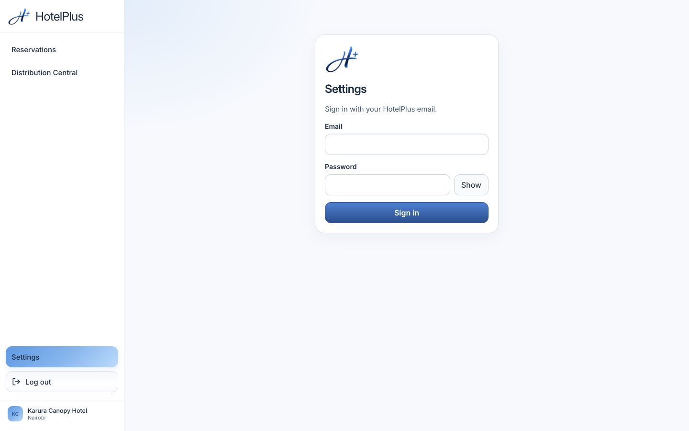
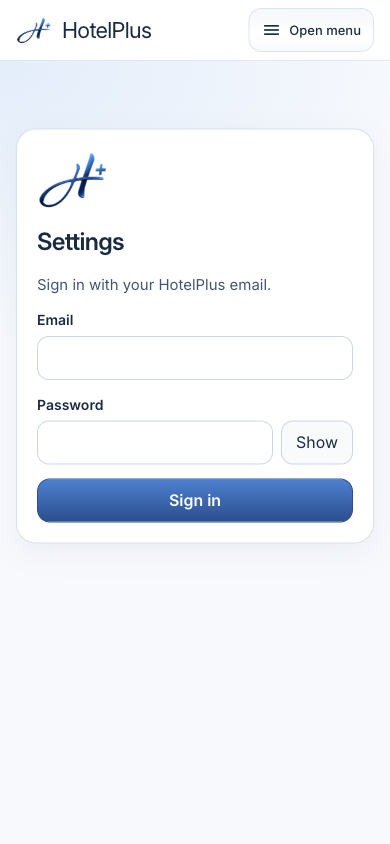
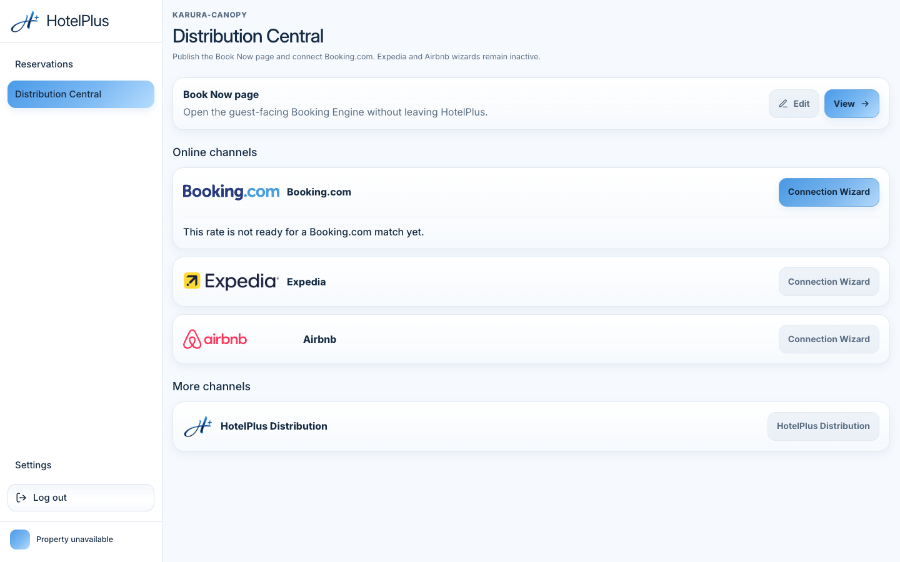
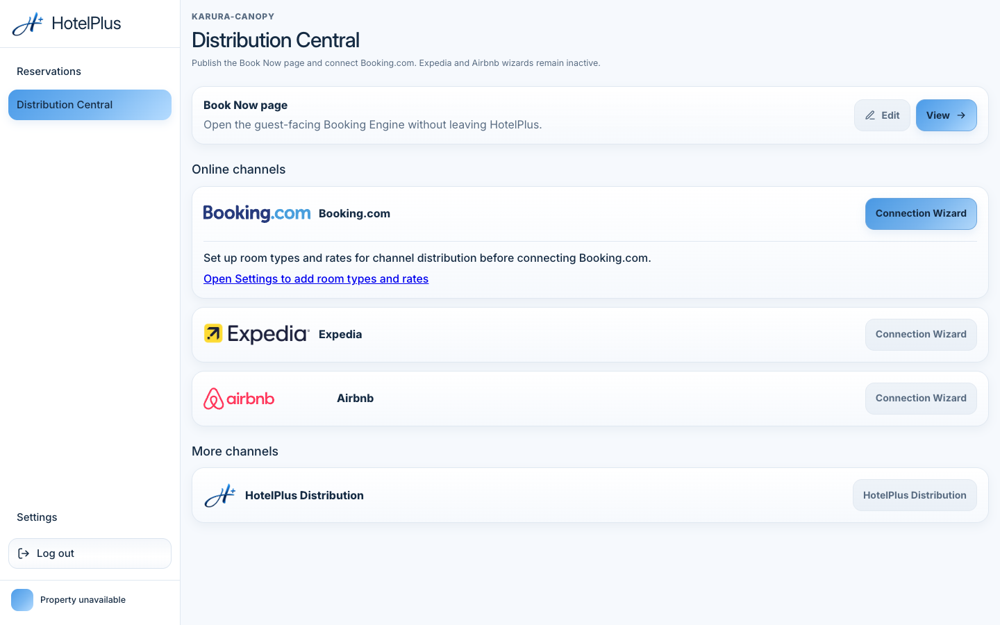
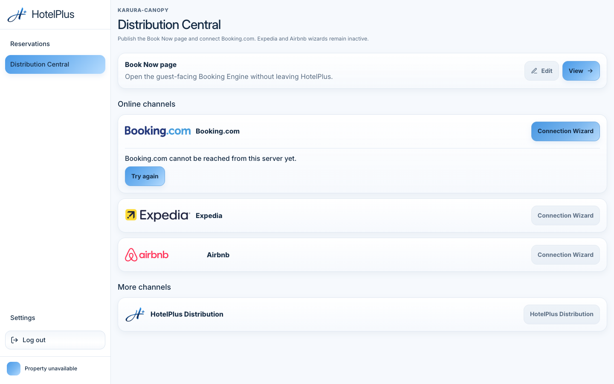
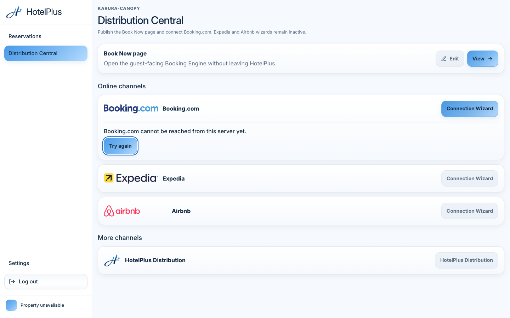
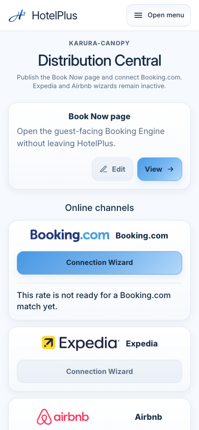
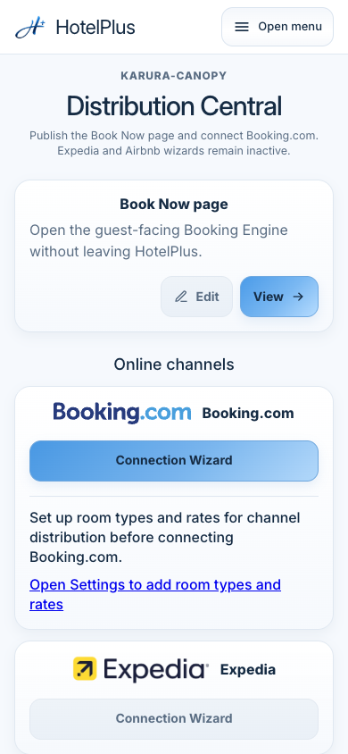
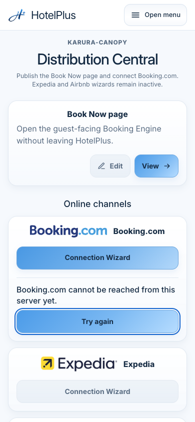

Public copy for review without a sign-in. The application repository is private.
These files contain no channel credentials and no session token.
Håvar’s visual acceptance is still pending. Settings is not visually approved.
The published 1440 Settings files are 1440×900 bitmaps with a pixel-identical second sidebar.
The live page at 1440 CSS pixels had one sidebar, one main, and a scroll width of 1440.
The published 390 currency files are 780×1688 bitmaps, which is 390×844 CSS at device pixel ratio 2, with a copied band at the bottom.
A Chrome viewport capture with device pixel ratio 1 and capture beyond the viewport turned off produces a bitmap of the same size as the CSS viewport and does not repeat the sidebar or the bottom band.
The Cursor screenshot tool produced a 3730×2108 bitmap of the same 1440×900 page, so that export is not a viewport capture.
The duplication is in the earlier capture and export, not in the live page.
The signed-in Settings session was not available. The two images below are the signed-out staff shell on the deployed preview. They are a capture-method check, not Settings content, and they do not replace the signed-in sections.

Deployed preview d0a61c285b076db2dcf8b15d3baf69c2cc41669b.
CSS viewport 1440×900. Bitmap 1440×900.
Chrome DevTools viewport capture, device pixel ratio 1, not stitched.
Signed-out shell, not Settings content.
image

Deployed preview d0a61c285b076db2dcf8b15d3baf69c2cc41669b.
CSS viewport 390×844. Bitmap 390×844.
Chrome DevTools viewport capture, device pixel ratio 1, not stitched.
Signed-out shell, navigation closed. Not Settings content.
image
Connection Wizard inside the local candidate
Application commit fe68f0b05916070ada0f375313885205b67fb27e, which contains the reviewed wording commit 7fb067b203100cd5c590fef9bdc60d408cb06b95.
Local Distribution Central, real fonts, styles, and shell.
Each Booking.com response was intercepted in the browser and is simulated. No channel connection was created.
Playwright viewport screenshot, device pixel ratio 1, one viewport, not stitched.
CSS viewport and bitmap are the same size.
fe68f0b · CSS 1440×900 · bitmap 1440×900 · local candidate · simulated field connectionSetup · blocked, no Settings link, no Try again ·
connection setup

fe68f0b · CSS 1440×900 · bitmap 1440×900 · local candidate · simulated field ratePlan · blocked, no Settings link, no Try again ·
rate mapping

fe68f0b · CSS 1440×900 · bitmap 1440×900 · local candidate · simulated field roomType · blocked, Settings link, no Try again ·
local room-type gap

fe68f0b · CSS 1440×900 · bitmap 1440×900 · local candidate · simulated field connection · Try again, no Settings link ·
request failure

fe68f0b · CSS 1440×900 · bitmap 1440×900 · local candidate · simulated · keyboard focus on Try again ·
keyboard focus
fe68f0b · CSS 1440×900 · bitmap 1440×900 · local candidate · simulated · after Try again, a second request was made ·
after retry
fe68f0b · CSS 390×844 · bitmap 390×844 · local candidate · simulated field connectionSetup · blocked, no Settings link, no Try again ·
connection setup

fe68f0b · CSS 390×844 · bitmap 390×844 · local candidate · simulated field ratePlan · blocked, no Settings link, no Try again ·
rate mapping

fe68f0b · CSS 390×844 · bitmap 390×844 · local candidate · simulated field roomType · blocked, Settings link, no Try again ·
local room-type gap
fe68f0b · CSS 390×844 · bitmap 390×844 · local candidate · simulated field connection · Try again, no Settings link ·
request failure

fe68f0b · CSS 390×844 · bitmap 390×844 · local candidate · simulated · keyboard focus on Try again ·
keyboard focus
fe68f0b · CSS 390×844 · bitmap 390×844 · local candidate · simulated · after Try again, a second request was made ·
after retry
Superseded captures
These Settings files and the earlier standalone wizard renders cannot support visual acceptance.
Desktop files repeat the sidebar and truncate the page. The 390 currency files repeat a band at the bottom.
The 890×1460 header is not a 390 CSS viewport.
The earlier wizard renders are the component alone, not Distribution Central.
The account email line was covered in the desktop header and the 890 header. That covering is a redaction, labelled here. The address is not in the replacement captures.